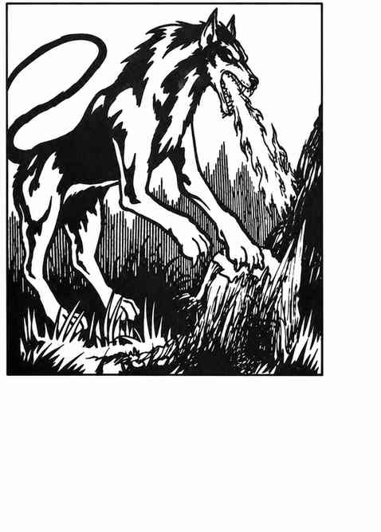

地狱犬 · Hell Hound
 |
|
地狱犬通常并非来自物质位面，但少数被邪恶生物带来，供其役使。
除用巨大的黑牙撕咬外，地狱犬还能朝 1 寸内的对手喷出灼热火焰；每颗生命骰造成 1 点伤害。若目标通过对抗龙息武器的豁免检定，伤害减半。例如，7 颗生命骰的地狱犬造成 7 点伤害，豁免成功则为 4 点。
地狱犬行动隐秘，遭遇骰为 1–4（六面骰）时会突袭对手。它们听觉敏锐，只有遭遇骰为 1 时才会被突袭；视力也极佳，有 50% 概率发现隐藏或隐形生物。因此，怪物与火巨人常把地狱犬用作看门犬。
外观。 地狱犬呈铁锈红至红褐色，眼睛发出红光，牙齿与舌头为煤黑色。